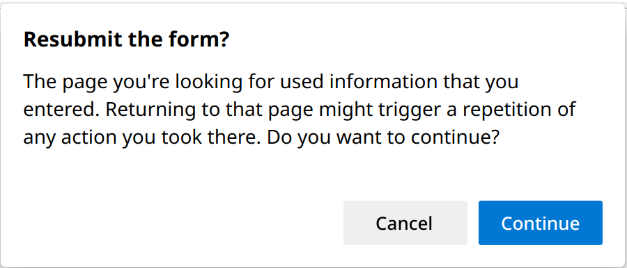
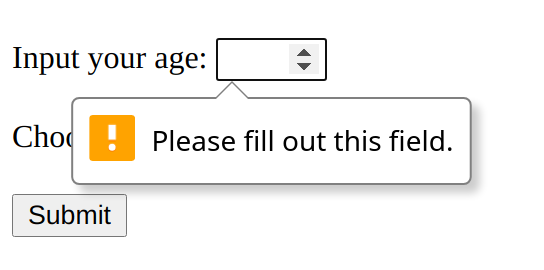

3.2 Request And Response
In the last section, we studied the lifecycle of a servlet. But a servler's real job is to handle requests. That is when a servlet's life has meaning. In the mini MVC project, we can send an HTTP request to a servlet, and then the servlet is able to get parameters from the request, and finally make a response. In this section, we look at the fundamentals of the request and response again.
API revisited
As we can see, request and response are the arguments to service()[1], and they are the key to everything in daily programming.
protected void service(HttpServletRequest req, HttpServletResponse resp)
In Exercise 2.2, you are asked to draw UML for HttpServletRequest and HttpServletResponse, and the following is the answer:
The HttpServletRequest and HttpServletResponse methods are about HTTP things like cookies, headers and sessions. Again, you don't have to memorize these APIs. Note that both HttpServletRequest and HttpServletResponse are also interfaces. Are there concrete classes there in the API? The answer is no because they are left to the vendor (e.g., Tomcat, GlassFish) to implement. The good news is that you don't worry about it; you should never care about the actual implementation class name or type[2].
HTTP methods
Another key point is to understand HTTP methods, which we have studied in Section 1.4. In the real servlet world, you only care about GET and POST. And in what follows, we revisit the two HTTP methods using mini-mvc, and suppose we always select novel.
[!TIP] Open the
Networktab to inspect the HTTP related information.
By default, a form's method is GET, so we can notice the sent parameters is found in the URL by appending a query string ?books=novel. In general, GET is idempotent[3]; you can refresh the web browser safely, because an identical idempotent request can be made once or several times in a row with the same effect.
The query string, starting with a question mark ?, is make of parameters in the form of name=value. What about parameters more than one? We add another input element in ch3/request.
<form action="book">
<label for="age">Input your age:</label>
<input type="text" id="age" name="age">
<br><br>
<label for="books">Choose a genre:</label>
<select name="books" id="books">
<option value="novel">novel</option>
<option value="history">history</option>
<option value="math">math</option>
<option value="programming">programming</option>
</select>
<br><br>
<input type="submit" value="Submit">
</form>
Suppose we input 9, the query string becomes ?age=9&books=novel. As we can see, multiple query parameters are separated by the ampersand &.
By contrast, if the form's method is set to POST, as in Exercise 2.14, then the parameters(or payload) is invisible in the URL. Rather, they are wrapped in the message body. So, POST is preferred due to its security when you would like to send parameters like passwords. Fig 3.4 shows an anatomy of an HTTP POST request sending from chp3 | request | ... | index_post.html. Another difference between them is that POST can send larger size of parameter. Besides, when you would like to send non-text data, such as an image, POST is the only choice.
Remember, there is another crucial difference between GET and POST in terms of semantics: the way they are supposed to be used. GET is meant to be used for getting things. Sure, you might use parameters to help figure out what to send back, but the point is that you are not making any changes on the server[4]! As for POST, it would change something on the server[5].
When it comes to idempotency, POST is non-idempotent. Try to refresh the page after submitting a POST form index_post.html, and the web browser would show you a warning because repeating the same POST request can be dangerous sometimes. For example, when you purchase a book on the website, the payment action, say Checkout servlet, shall update the state of the server, including adding a record in order, decreasing the book's stock, and decreasing your account balance, so it should be POST. What if you refresh the page after payment? Will it duplicate the transaction? Will it cost you twice of the money? Anyway, POST has side effect, so you have to be careful with your doPost() functionality[6].

In-depth parameter(1)
In the last subsection, we discussed the difference between GET and POST. But the code is nearly the same when it comes to coding. Now let's revisit getParameter().
String getParameter(String name) Returns the value of a request parameter as a String, or null if the parameter does not exist.
Some students may ask: why does it always return String object? Well, it is a design choice. Application protocols, like HTTP, are human readable, as we can see in Fig 1.15 and 3.4. So representing them in text (i.e., String in Java) is reasonable. Then, what if the intended parameter is not String? Programmers can convert it to any desired data type according to the application logic. For example, in ch3 | request, the age shall be int,
int age = Integer.parseInt(request.getParameter("age"));
Note that the code above may throw exceptions:
- Case 1: the name
"age"does not exist. - Case 2: the value of
"age"cannot be converted toint. For example, "abc", "3.14".
Therefore, to make sure the application is robust, programmers need to consider such edge cases in case of evil and careless users. In ch3 | request | ... | index.html,
<input type="text" id="age" name="age">
But what if the user forget to input? Or input "abc"? Generally speaking, there are two ways to prohibit something bad happening: front-end (client-side) and back-end (server-side).
Front-end checking
Front-end mainly relies on JavaScript. And modern HTML also provides specific input elements to alleviate such problem.
<input type="number" id="age" name="age">
This input element forces us to input a number. But what if the user input -1 or 200? Clearly, the age cannot be less than 1 or greater than 150[7]. We can add more restriction:
<input type="number" id="age" name="age" min="1" max="150">
So far so good, but what if the user forget to input? Then the parameter age would be an empty, and the query string is ?age=&book=novel. Luckily, HTML can add required restriction for an input element:
<input type="number" id="age" name="age" min="1" max="150" required>
Then it will prevent you submitting the form with empty values[8].

It seems that everything goes well. But unfortunately, front-end checking methods can only prevent careless people, not evil guys. For example, people can issue an request by the URL directly, and skip the check of the web browser. Therefore, we need also ask the back-end for help.
Back-end checking
Let's inspect the two cases mentioned above:
- Case 1: the name
"age"does not exist. In this case,getParameter()would returnnull.
int age;
if (request.getParameter("age") != null) {
age = Integer.parseInt(request.getParameter("age"));
// normal logic
} else {
// handling error
}
It is up to the developers to decide how to handle the detected error. For example, forward this request to another error page:
request.getRequestDispatcher("error.html").forward(request, response);
- Case 2: the value of
"age"cannot be converted toint. It is apparently that converting from strings like"abc","3.14"would result in an error (or exception in Java). To determine the exact type of error, you can use the skill introduced in Section 2.2. The following is method signature ofparseInt().
public static int parseInt(String s) throws NumberFormatException
We can use the try...catch structure to capture the exception inside if:
try {
age = Integer.parseInt(request.getParameter("age"));
// normal logic
} catch (NumberFormatException e) {
// handling error
}
Note that since parseInt() would also throw NumberFormatException when its argument is null, so we can simplify the code by removing the if check.
A final note for error checking
Front-end and back-end methods for error checking cannot replace each other. For a robust system, the two methods are indispensable. We recommend at least using client-side validation. In general, the front-end is mainly used to warn users before they do something wrong, while the back-end is mainly used to prevent the system being malfunction after users did something wrong.
[1] As we have seen, they are also the arguments to doXXX() method, such as doGet() and doPost().
[2] The containers/servers provides objects that implement those interfaces as long as it is Java EE compliant. And this is also the benefit of interface oriented design.
[3] Idempotency means that multiple identical requests will have the same outcome.
[4] Of course, no one forbids you changing the server using GET, but it is not encouraged to break its getting convention.
[5] Again, of course, no one forbids you using POST like a GET to simply send something back, but it is not encouraged to break its updating convention.
[6] It is the responsibility of programmers to decide how to handle re-submitting POST requests.
[7] According to oldest people - Wikipedia, the oldest people alive is 122 years old, as of the time of writing (January, 2022).
[8] Depending on your browser and OS, you’ll see a slightly different style of feedback.